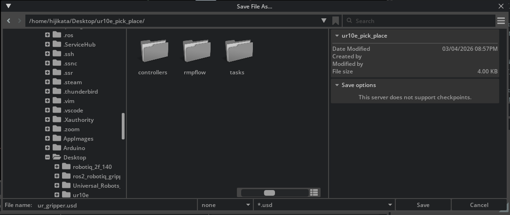

Pick and Place Example¶
Learning Objectives¶
After completing this tutorial, you will have learned:
- How to control gripper open/close operations
- Target following using the Lula Kinematics Solver (Inverse Kinematics)
- Configuring and running RMPFlow motion control
- Implementing a pick and place task
Getting Started¶
Prerequisites¶
- Tutorial 8: Generate Robot Configuration Files completed
- The following files created in Tutorials 7-8 should be available:
- USD asset (
ur_gripper.usd) — Created in Tutorial 7 - URDF file (
ur_gripper.urdf) — Generated in Tutorial 8 Step 1 - Lula robot description file (
ur10e.yaml) — Generated in Tutorial 8 Step 5
- USD asset (
Estimated Time¶
Approximately 30-40 minutes
Overview¶
In the previous tutorials, you set up the UR10e robot arm and Robotiq 2F-140 gripper and generated configuration files (URDF, robot description YAML) for kinematics solvers.
In this tutorial, you will use these artifacts to create Python scripts in your own project directory to control the robot. We will proceed step by step through the following 5 steps:
- Project Setup — Directory structure and configuration file placement
- Gripper Control — Basics of controlling gripper open/close
- Follow Target with IK Solver — Move the end-effector to a target position using inverse kinematics
- Follow Target with RMPFlow — Smooth motion control including obstacle avoidance
- Pick and Place Task — Combine everything for object grasping and placement
Bundled samples are available for reference
Isaac Sim includes complete sample code equivalent to this tutorial. If you get stuck or want to verify behavior, refer to the scripts at the following path:
How to run:
Step 1: Project Setup¶
1-1. Directory Structure¶
Create a project directory at any location and organize files as shown below. Here we use ur10e_pick_place as the example directory name:
ur10e_pick_place/
├── ur_gripper.usd # USD asset from Tutorial 7 (placed via Save As)
├── gripper_control.py # Created in Step 2
├── follow_target_example.py # Created in Step 3
├── follow_target_example_rmpflow.py # Created in Step 4
├── pick_place_example.py # Created in Step 5
├── controllers/
│ ├── __init__.py # Empty file
│ ├── ik_solver.py # Created in Step 3
│ ├── rmpflow.py # Created in Step 4
│ └── pick_place.py # Created in Step 5
├── tasks/
│ ├── __init__.py # Empty file
│ ├── follow_target.py # Created in Step 3
│ └── pick_place.py # Created in Step 5
└── rmpflow/
├── ur10e.yaml # Copy Lula robot description file generated in Tutorial 8
├── ur_gripper.urdf # Copy URDF file generated in Tutorial 8
└── ur10e_rmpflow_common.yaml # Created in Step 4
1-2. Placing the USD Asset¶
The ur_gripper.usd created in Tutorial 7 references other files (Physics Layer, mesh files, etc.) via relative paths. Simply copying the file will cause the robot to fail to load because the referenced files cannot be found.
Use Isaac Sim's Save As function to save a new USD file with correctly resolved reference paths in the project directory:
- Open
ur_gripper.usdin Isaac Sim -
In the Stage panel, set the Target Position for the following joints:
Joint Target Position Description shoulder_lift_joint-10.0degTilt the shoulder slightly upward elbow_joint10.0degBend the elbow slightly upward This prevents the robot's elbow from bending toward the ground when the simulation starts.
-
Select File > Save As... from the menu
-
Set the save location to your project directory (
ur10e_pick_place/) and save with the filenameur_gripper.usd
When using Save As, the relative paths to referenced files (such as Physics Layers) are automatically updated to match the new save location.
Do not simply copy the file
If you copy ur_gripper.usd using a file manager or command, the internal relative path references will break and the robot's prim hierarchy will not load, resulting in errors like:
1-3. Placing Other Files¶
Copy the following files created in Tutorial 8 to the project directory:
ur10e.yaml— Robot description file exported from Lula Robot Description Editor (place inrmpflow/)ur_gripper.urdf— URDF file generated by USD to URDF Exporter (place inrmpflow/)
mkdir -p ur10e_pick_place/rmpflow
mkdir -p ur10e_pick_place/controllers
mkdir -p ur10e_pick_place/tasks
touch ur10e_pick_place/controllers/__init__.py
touch ur10e_pick_place/tasks/__init__.py
# Copy files created in Tutorial 8 (adjust paths to your environment)
cp /path/to/your/ur10e.yaml ur10e_pick_place/rmpflow/
cp /path/to/your/ur_gripper.urdf ur10e_pick_place/rmpflow/
New-Item -ItemType Directory -Force ur10e_pick_place\rmpflow
New-Item -ItemType Directory -Force ur10e_pick_place\controllers
New-Item -ItemType Directory -Force ur10e_pick_place\tasks
New-Item -ItemType File -Force ur10e_pick_place\controllers\__init__.py
New-Item -ItemType File -Force ur10e_pick_place\tasks\__init__.py
# Copy files created in Tutorial 8 (adjust paths to your environment)
Copy-Item C:\path\to\your\ur10e.yaml ur10e_pick_place\rmpflow\
Copy-Item C:\path\to\your\ur_gripper.urdf ur10e_pick_place\rmpflow\
About code examples below
The code examples below use os.path.dirname(__file__) to reference ur_gripper.usd via a relative path from the current script. By placing the USD asset in the project root, the path is fixed and does not depend on the environment.
1-4. How to Run Scripts¶
Run the tutorial scripts using the Isaac Sim Python environment as follows:
Step 2: Gripper Control¶
As the first step, learn how to control gripper open/close operations. This is the most basic operation for manipulation tasks.

2-1. Creating the Script¶
Create gripper_control.py:
from isaacsim import SimulationApp
simulation_app = SimulationApp({"headless": False})
import os
import numpy as np
from isaacsim.core.api import World
from isaacsim.core.utils.stage import add_reference_to_stage
from isaacsim.core.utils.types import ArticulationAction
from isaacsim.robot.manipulators import SingleManipulator
from isaacsim.robot.manipulators.grippers import ParallelGripper
my_world = World(stage_units_in_meters=1.0)
# --- Load asset ---
asset_path = os.path.join(os.path.dirname(os.path.abspath(__file__)), "ur_gripper.usd")
add_reference_to_stage(usd_path=asset_path, prim_path="/ur10e")
# --- Debug: Display prim hierarchy in the stage ---
import omni.usd
stage = omni.usd.get_context().get_stage()
for prim in stage.Traverse():
print(prim.GetPath())
# --- Define gripper ---
gripper = ParallelGripper(
end_effector_prim_path="/ur10e/ee_link/robotiq_140_base_link",
# If using existing assets:
# end_effector_prim_path="/ur10e/ee_link/robotiq_arg2f_base_link",
joint_prim_names=["finger_joint"],
joint_opened_positions=np.array([0]),
joint_closed_positions=np.array([40]),
action_deltas=np.array([-40]),
use_mimic_joints=True,
)
# --- Define manipulator ---
my_ur10 = my_world.scene.add(
SingleManipulator(
prim_path="/ur10e",
name="ur10_robot",
end_effector_prim_path="/ur10e/ee_link/robotiq_140_base_link",
# If using existing assets:
# end_effector_prim_path="/ur10e/ee_link/robotiq_arg2f_base_link",
gripper=gripper,
)
)
my_world.scene.add_default_ground_plane()
my_world.reset()
# --- Simulation loop ---
i = 0
reset_needed = False
while simulation_app.is_running():
my_world.step(render=True)
if my_world.is_stopped() and not reset_needed:
reset_needed = True
if my_world.is_playing():
if reset_needed:
my_world.reset()
reset_needed = False
i += 1
gripper_positions = my_ur10.gripper.get_joint_positions()
if i < 400:
# Slowly close the gripper
my_ur10.gripper.apply_action(
ArticulationAction(joint_positions=[gripper_positions[0] + 0.1])
)
if i > 400:
# Slowly open the gripper
my_ur10.gripper.apply_action(
ArticulationAction(joint_positions=[gripper_positions[0] - 0.1])
)
if i == 800:
i = 0
simulation_app.close()
2-2. Code Explanation¶
SimulationApp Initialization¶
All Isaac Sim standalone scripts start by initializing SimulationApp. Setting headless=False displays the GUI.
Import order matters
SimulationApp must be initialized before importing other Isaac Sim modules. This is because the Isaac Sim runtime is set up during SimulationApp initialization.
ParallelGripper Configuration¶
gripper = ParallelGripper(
end_effector_prim_path="/ur10e/ee_link/robotiq_140_base_link",
# If using existing assets:
# end_effector_prim_path="/ur10e/ee_link/robotiq_arg2f_base_link",
joint_prim_names=["finger_joint"],
joint_opened_positions=np.array([0]),
joint_closed_positions=np.array([40]),
action_deltas=np.array([-40]),
use_mimic_joints=True,
)
The ParallelGripper class controls parallel grippers (the type where two fingers open and close simultaneously).
| Parameter | Value | Description |
|---|---|---|
end_effector_prim_path |
/ur10e/ee_link/robotiq_arg2f_base_link |
Prim path of the end-effector |
joint_prim_names |
["finger_joint"] |
Name of the joint to control |
joint_opened_positions |
[0] |
Joint position when the gripper is open |
joint_closed_positions |
[40] |
Joint position when the gripper is closed |
action_deltas |
[-40] |
Delta of joint position change for open/close actions |
use_mimic_joints |
True |
Use mimic joints (moving one finger moves the other in sync) |
About joint position values
The values joint_opened_positions=0 and joint_closed_positions=40 are based on the Robotiq 2F-140 gripper's joint range of motion configured in Tutorial 7. Use the values confirmed in Physics Inspector.
Gripper Open/Close Loop¶
i += 1
gripper_positions = my_ur10.gripper.get_joint_positions()
if i < 400:
my_ur10.gripper.apply_action(
ArticulationAction(joint_positions=[gripper_positions[0] + 0.1])
)
if i > 400:
my_ur10.gripper.apply_action(
ArticulationAction(joint_positions=[gripper_positions[0] - 0.1])
)
if i == 800:
i = 0
This repeats the following in 800-step cycles:
- Steps 1-400: Add
+0.1to the current joint position each step to close the gripper - Steps 401-800: Subtract
-0.1from the current joint position each step to open the gripper
By applying small increments each step, the gripper opens and closes slowly and smoothly.
Step 3: Follow Target with Lula Kinematics Solver¶
Next, learn how to move the end-effector to a target position using Inverse Kinematics (IK).

What is Inverse Kinematics (IK)?
Inverse kinematics is a method of computing joint angles from a desired end-effector position and orientation. Given the goal "move the hand to this position", it calculates the angle each joint should be at.
In this step, you will create 3 files:
controllers/ik_solver.py— IK solver controllertasks/follow_target.py— Follow target task definitionfollow_target_example.py— Execution script
3-1. Creating the IK Solver Controller¶
Create controllers/ik_solver.py. This controller uses the configuration files generated in Tutorial 8 to solve inverse kinematics.
import os
from typing import Optional
from isaacsim.core.prims import Articulation
from isaacsim.robot_motion.motion_generation import (
ArticulationKinematicsSolver,
LulaKinematicsSolver,
)
class KinematicsSolver(ArticulationKinematicsSolver):
def __init__(
self,
robot_articulation: Articulation,
end_effector_frame_name: Optional[str] = None,
) -> None:
self._kinematics = LulaKinematicsSolver(
robot_description_path=os.path.join(
os.path.dirname(__file__), "../rmpflow/ur10e.yaml"
),
urdf_path=os.path.join(
os.path.dirname(__file__), "../rmpflow/ur_gripper.urdf"
),
)
if end_effector_frame_name is None:
end_effector_frame_name = "robotiq_140_base_link"
# If using existing assets:
# end_effector_frame_name = "ee_link_robotiq_arg2f_base_link"
ArticulationKinematicsSolver.__init__(
self, robot_articulation, self._kinematics, end_effector_frame_name
)
return
Key points:
- Passes the paths to
ur10e.yamlandur_gripper.urdfplaced in Step 1 toLulaKinematicsSolver end_effector_frame_nameis the end-effector frame name. It must match a link name in the URDF file (e.g.,robotiq_140_base_link). Note that URDF link names may differ from USD prim paths, so checkur_gripper.urdfto confirm
3-2. Creating the Follow Target Task¶
Create tasks/follow_target.py. This task places the robot and target in the scene and provides observations.
import os
from typing import Optional
import isaacsim.core.api.tasks as tasks
import numpy as np
from isaacsim.core.utils.stage import add_reference_to_stage
from isaacsim.robot.manipulators.grippers import ParallelGripper
from isaacsim.robot.manipulators.manipulators import SingleManipulator
class FollowTarget(tasks.FollowTarget):
def __init__(
self,
name: str = "ur10e_follow_target",
target_prim_path: Optional[str] = None,
target_name: Optional[str] = None,
target_position: Optional[np.ndarray] = None,
target_orientation: Optional[np.ndarray] = None,
offset: Optional[np.ndarray] = None,
) -> None:
tasks.FollowTarget.__init__(
self,
name=name,
target_prim_path=target_prim_path,
target_name=target_name,
target_position=target_position,
target_orientation=target_orientation,
offset=offset,
)
return
def set_robot(self) -> SingleManipulator:
# Reference ur_gripper.usd in the parent directory (project root) of tasks/
asset_path = os.path.join(os.path.dirname(__file__), "..", "ur_gripper.usd")
add_reference_to_stage(usd_path=asset_path, prim_path="/ur10e")
gripper = ParallelGripper(
end_effector_prim_path="/ur10e/ee_link/robotiq_140_base_link",
# If using existing assets:
# end_effector_prim_path="/ur10e/ee_link/robotiq_arg2f_base_link",
joint_prim_names=["finger_joint"],
joint_opened_positions=np.array([0]),
joint_closed_positions=np.array([40]),
action_deltas=np.array([-40]),
use_mimic_joints=True,
)
manipulator = SingleManipulator(
prim_path="/ur10e",
name="ur10_robot",
end_effector_prim_path="/ur10e/ee_link/robotiq_140_base_link",
# If using existing assets:
# end_effector_prim_path="/ur10e/ee_link/robotiq_arg2f_base_link",
gripper=gripper,
)
return manipulator
Key points:
- Inherits from the Isaac Sim base class
tasks.FollowTarget - The
set_robot()method initializes the robot. The base class calls this method to add the robot to the scene - Gripper configuration is the same as Step 2
3-3. Creating the Follow Target Script¶
Create follow_target_example.py:
from isaacsim import SimulationApp
simulation_app = SimulationApp({"headless": False})
import numpy as np
from controllers.ik_solver import KinematicsSolver
from isaacsim.core.api import World
from tasks.follow_target import FollowTarget
my_world = World(stage_units_in_meters=1.0)
# Initialize follow target task (specify initial target position)
my_task = FollowTarget(
name="ur10e_follow_target",
target_position=np.array([0.5, 0, 0.5]),
)
my_world.add_task(my_task)
my_world.reset()
# Get robot and target information from the task
task_params = my_world.get_task("ur10e_follow_target").get_params()
target_name = task_params["target_name"]["value"]
ur10e_name = task_params["robot_name"]["value"]
my_ur10e = my_world.scene.get_object(ur10e_name)
# Initialize IK solver
ik_solver = KinematicsSolver(my_ur10e)
articulation_controller = my_ur10e.get_articulation_controller()
# Simulation loop
while simulation_app.is_running():
my_world.step(render=True)
if my_world.is_playing():
if my_world.current_time_step_index == 0:
my_world.reset()
# Observe target position and orientation
observations = my_world.get_observations()
# Compute joint angles with IK solver
actions, succ = ik_solver.compute_inverse_kinematics(
target_position=observations[target_name]["position"],
target_orientation=observations[target_name]["orientation"],
)
if succ:
articulation_controller.apply_action(actions)
else:
print("IK did not converge to a solution. No action is being taken.")
simulation_app.close()
Processing Flow¶
-
Initialize world and task: Create a
Worldand add aFollowTargettask. Set the target initial position to[0.5, 0, 0.5]. -
Initialize IK solver: Create a
KinematicsSolverand get the robot's articulation controller. -
Simulation loop: Each step executes the following:
- Observe the target's current position and orientation
- Compute joint angles to reach the target position using the IK solver
- If computation succeeds, apply joint angles to the robot
Move the target during simulation
While the simulation is running, you can drag the target (a small cube) in the viewport to move it. Observe how the end-effector follows the target in real time.
Step 4: Follow Target with RMPFlow¶
The IK solver can reach target positions, but does not generate smooth motions considering obstacle avoidance or joint limits. RMPFlow (Riemannian Motion Policy Flow) is a motion planning framework that handles these in an integrated manner.
What is RMPFlow?
RMPFlow is a motion planning algorithm that integrates multiple control objectives (reaching a target, obstacle avoidance, joint limit compliance, etc.) within a Riemannian geometry framework. Each objective is defined as an independent "policy", and they are automatically composed to generate smooth motion.
In this step, you will create 3 files:
rmpflow/ur10e_rmpflow_common.yaml— RMPFlow configuration filecontrollers/rmpflow.py— RMPFlow controllerfollow_target_example_rmpflow.py— Execution script
4-1. Creating the RMPFlow Configuration File¶
Create rmpflow/ur10e_rmpflow_common.yaml. This file defines the motion policy parameters for RMPFlow:
joint_limit_buffers: [.01, .01, .01, .01, .01, .01]
rmp_params:
cspace_target_rmp:
metric_scalar: 50.
position_gain: 100.
damping_gain: 50.
robust_position_term_thresh: .5
inertia: 1.
cspace_trajectory_rmp:
p_gain: 100.
d_gain: 10.
ff_gain: .25
weight: 50.
cspace_affine_rmp:
final_handover_time_std_dev: .25
weight: 2000.
joint_limit_rmp:
metric_scalar: 1000.
metric_length_scale: .01
metric_exploder_eps: 1e-3
metric_velocity_gate_length_scale: .01
accel_damper_gain: 200.
accel_potential_gain: 1.
accel_potential_exploder_length_scale: .1
accel_potential_exploder_eps: 1e-2
joint_velocity_cap_rmp:
max_velocity: 1.
velocity_damping_region: .3
damping_gain: 1000.0
metric_weight: 100.
target_rmp:
accel_p_gain: 30.
accel_d_gain: 85.
accel_norm_eps: .075
metric_alpha_length_scale: .05
min_metric_alpha: .01
max_metric_scalar: 10000
min_metric_scalar: 2500
proximity_metric_boost_scalar: 20.
proximity_metric_boost_length_scale: .02
xi_estimator_gate_std_dev: 20000.
accept_user_weights: false
axis_target_rmp:
accel_p_gain: 210.
accel_d_gain: 60.
metric_scalar: 10
proximity_metric_boost_scalar: 3000.
proximity_metric_boost_length_scale: .08
xi_estimator_gate_std_dev: 20000.
accept_user_weights: false
collision_rmp:
damping_gain: 50.
damping_std_dev: .04
damping_robustness_eps: 1e-2
damping_velocity_gate_length_scale: .01
repulsion_gain: 800.
repulsion_std_dev: .01
metric_modulation_radius: .5
metric_scalar: 10000.
metric_exploder_std_dev: .02
metric_exploder_eps: .001
damping_rmp:
accel_d_gain: 30.
metric_scalar: 50.
inertia: 100.
canonical_resolve:
max_acceleration_norm: 50.
projection_tolerance: .01
verbose: false
body_cylinders:
- name: base
pt1: [0,0,.10]
pt2: [0,0,0.]
radius: .2
body_collision_controllers:
- name: robotiq_140_base_link
radius: .05
Key parameters:
| Section | Description |
|---|---|
joint_limit_buffers |
Buffer values for each joint's limits (adds a small margin from the limit values) |
cspace_target_rmp |
Gains for target following in configuration space |
joint_limit_rmp |
RMP parameters to prevent exceeding joint limits |
joint_velocity_cap_rmp |
Parameters controlling joint velocity upper limits (max_velocity: 1.) |
target_rmp |
Target following parameters in task space (end-effector position) |
collision_rmp |
Parameters for obstacle avoidance (repulsion force controlled by repulsion_gain) |
body_cylinders |
Collision shape approximating the robot base as a cylinder |
body_collision_controllers |
Collision radius for the end-effector |
Parameter tuning
Most parameters work well with default values. If the robot moves too slowly or too fast, try adjusting accel_p_gain and accel_d_gain in target_rmp, or max_velocity in joint_velocity_cap_rmp.
4-2. Creating the RMPFlow Controller¶
Create controllers/rmpflow.py:
import os
import isaacsim.robot_motion.motion_generation as mg
from isaacsim.core.prims import Articulation
class RMPFlowController(mg.MotionPolicyController):
def __init__(
self,
name: str,
robot_articulation: Articulation,
physics_dt: float = 1.0 / 60.0,
) -> None:
# Initialize RMPFlow motion policy
self.rmpflow = mg.lula.motion_policies.RmpFlow(
robot_description_path=os.path.join(
os.path.dirname(__file__), "../rmpflow/ur10e.yaml"
),
rmpflow_config_path=os.path.join(
os.path.dirname(__file__), "../rmpflow/ur10e_rmpflow_common.yaml"
),
urdf_path=os.path.join(
os.path.dirname(__file__), "../rmpflow/ur_gripper.urdf"
),
end_effector_frame_name="robotiq_140_base_link",
maximum_substep_size=0.00334,
)
# Wrap with ArticulationMotionPolicy
self.articulation_rmp = mg.ArticulationMotionPolicy(
robot_articulation, self.rmpflow, physics_dt
)
mg.MotionPolicyController.__init__(
self, name=name, articulation_motion_policy=self.articulation_rmp
)
# Set robot base pose
self._default_position, self._default_orientation = (
self._articulation_motion_policy._robot_articulation.get_world_pose()
)
self._motion_policy.set_robot_base_pose(
robot_position=self._default_position,
robot_orientation=self._default_orientation,
)
return
def reset(self):
mg.MotionPolicyController.reset(self)
self._motion_policy.set_robot_base_pose(
robot_position=self._default_position,
robot_orientation=self._default_orientation,
)
Key points:
| Element | Description |
|---|---|
RmpFlow(...) |
Loads configuration files generated in Tutorial 8 and the YAML configuration created above |
maximum_substep_size |
Maximum time step size (seconds) for RMPFlow internal substeps. Smaller values increase accuracy but also computation cost |
ArticulationMotionPolicy |
Wrapper that connects the RmpFlow policy to the articulation (robot joint group) |
set_robot_base_pose(...) |
Sets the robot's base position and orientation. Important when the robot is placed at a non-origin position |
4-3. Creating the RMPFlow Follow Target Script¶
Create follow_target_example_rmpflow.py:
from isaacsim import SimulationApp
simulation_app = SimulationApp({"headless": False})
import numpy as np
from controllers.rmpflow import RMPFlowController
from isaacsim.core.api import World
from tasks.follow_target import FollowTarget
my_world = World(stage_units_in_meters=1.0)
# Initialize follow target task
my_task = FollowTarget(
name="ur10e_follow_target",
target_position=np.array([0.5, 0, 0.5]),
)
my_world.add_task(my_task)
my_world.reset()
task_params = my_world.get_task("ur10e_follow_target").get_params()
target_name = task_params["target_name"]["value"]
ur10e_name = task_params["robot_name"]["value"]
my_ur10e = my_world.scene.get_object(ur10e_name)
articulation_controller = my_ur10e.get_articulation_controller()
# Initialize RMPFlow controller
my_controller = RMPFlowController(
name="target_follower_controller",
robot_articulation=my_ur10e,
)
my_controller.reset()
# Simulation loop
while simulation_app.is_running():
my_world.step(render=True)
if my_world.is_playing():
if my_world.current_time_step_index == 0:
my_world.reset()
my_controller.reset()
observations = my_world.get_observations()
# Compute actions with RMPFlow
actions = my_controller.forward(
target_end_effector_position=observations[target_name]["position"],
target_end_effector_orientation=observations[target_name]["orientation"],
)
articulation_controller.apply_action(actions)
simulation_app.close()
4-4. Differences from IK Solver¶
| Aspect | IK Solver (Step 3) | RMPFlow (Step 4) |
|---|---|---|
| Computation method | Directly computes joint angles via inverse kinematics | Generates velocity commands via motion policy |
| Obstacle avoidance | None | Yes (configured via collision_rmp) |
| Joint limits | Basic limits only | Buffered limits (joint_limit_rmp) |
| Motion smoothness | Instantaneous movement to target angles | Smooth trajectory to reach the target |
| Convergence failure | May fail to find a solution | Always outputs actions (safely stops if unreachable) |

Step 5: Basic Pick and Place Task¶
Finally, combine everything to implement a task that grasps an object (pick) and places it at another location (place).

In this step, you will create 3 files:
controllers/pick_place.py— Pick and place controllertasks/pick_place.py— Pick and place task definitionpick_place_example.py— Execution script
5-1. Creating the Pick and Place Controller¶
Create controllers/pick_place.py. This controller combines the RMPFlowController created in Step 4 with gripper control to automatically execute the pick and place sequence.
import isaacsim.robot.manipulators.controllers as manipulators_controllers
from isaacsim.core.prims import SingleArticulation
from isaacsim.robot.manipulators.grippers import ParallelGripper
from .rmpflow import RMPFlowController
class PickPlaceController(manipulators_controllers.PickPlaceController):
def __init__(
self,
name: str,
gripper: ParallelGripper,
robot_articulation: SingleArticulation,
events_dt=None,
) -> None:
if events_dt is None:
events_dt = [0.005, 0.002, 1, 0.05, 0.0008, 0.005, 0.0008, 0.1, 0.0008, 0.008]
manipulators_controllers.PickPlaceController.__init__(
self,
name=name,
cspace_controller=RMPFlowController(
name=name + "_cspace_controller",
robot_articulation=robot_articulation,
),
gripper=gripper,
events_dt=events_dt,
end_effector_initial_height=0.6,
)
return
Key points:
cspace_controller: Uses theRMPFlowControllercreated in Step 4 as the motion control engineevents_dt: An array controlling the time allocation for each phase of the pick and place sequence:
| Index | Phase | Description |
|---|---|---|
| 0 | Move above object | Move end-effector above the pick position |
| 1 | Descend | Lower to the pick position |
| 2 | Close gripper | Grasp the object |
| 3 | Ascend | Lift the object |
| 4 | Move above place position | Move above the place position |
| 5 | Descend | Lower to the place position |
| 6 | Open gripper | Release the object |
| 7-9 | Retreat | Retreat end-effector to a safe position |
end_effector_initial_height: Initial height of the end-effector (0.6 meters). Maintains this height during movement.
5-2. Creating the Pick and Place Task¶
Create tasks/pick_place.py:
import os
from typing import Optional
import isaacsim.core.api.tasks as tasks
import numpy as np
from isaacsim.core.utils.stage import add_reference_to_stage
from isaacsim.robot.manipulators.grippers import ParallelGripper
from isaacsim.robot.manipulators.manipulators import SingleManipulator
class PickPlace(tasks.PickPlace):
def __init__(
self,
name: str = "ur10e_pick_place",
cube_initial_position: Optional[np.ndarray] = None,
cube_initial_orientation: Optional[np.ndarray] = None,
target_position: Optional[np.ndarray] = None,
offset: Optional[np.ndarray] = None,
cube_size: Optional[np.ndarray] = np.array([0.0515, 0.0515, 0.0515]),
) -> None:
tasks.PickPlace.__init__(
self,
name=name,
cube_initial_position=cube_initial_position,
cube_initial_orientation=cube_initial_orientation,
target_position=target_position,
cube_size=cube_size,
offset=offset,
)
return
def set_robot(self) -> SingleManipulator:
asset_path = os.path.join(os.path.dirname(__file__), "..", "ur_gripper.usd")
add_reference_to_stage(usd_path=asset_path, prim_path="/ur10e")
gripper = ParallelGripper(
end_effector_prim_path="/ur10e/ee_link/robotiq_140_base_link",
# If using existing assets:
# end_effector_prim_path="/ur10e/ee_link/robotiq_arg2f_base_link",
joint_prim_names=["finger_joint"],
joint_opened_positions=np.array([0]),
joint_closed_positions=np.array([40]),
action_deltas=np.array([-40]),
use_mimic_joints=True,
)
manipulator = SingleManipulator(
prim_path="/ur10e",
name="ur10_robot",
end_effector_prim_path="/ur10e/ee_link/robotiq_140_base_link",
# If using existing assets:
# end_effector_prim_path="/ur10e/ee_link/robotiq_arg2f_base_link",
gripper=gripper,
position=np.array([0, 0, 0.5]),
)
return manipulator
cube_sizedefaults to[0.0515, 0.0515, 0.0515](approximately 5cm cube)- The task automatically places a cube and target position marker in the scene
5-3. Creating the Pick and Place Script¶
Create pick_place_example.py:
from isaacsim import SimulationApp
simulation_app = SimulationApp({"headless": False})
import numpy as np
from controllers.pick_place import PickPlaceController
from isaacsim.core.api import World
from tasks.pick_place import PickPlace
# Initialize world (physics at 200Hz, rendering at 10Hz)
my_world = World(
stage_units_in_meters=1.0,
physics_dt=1 / 200,
rendering_dt=20 / 200,
)
# Set target position
target_position = np.array([-0.3, 0.6, 0])
target_position[2] = 0.0515 / 2.0 # Set Z coordinate to half the cube height
# Initialize pick and place task
my_task = PickPlace(
name="ur10e_pick_place",
cube_initial_position=np.array([0.6, 0.3, 0.0515 / 2.0]),
target_position=target_position,
cube_size=np.array([0.0515, 0.0515, 0.1]),
)
my_world.add_task(my_task)
my_world.reset()
# Initialize robot and controller
task_params = my_world.get_task("ur10e_pick_place").get_params()
ur10e_name = task_params["robot_name"]["value"]
my_ur10e = my_world.scene.get_object(ur10e_name)
my_controller = PickPlaceController(
name="controller",
robot_articulation=my_ur10e,
gripper=my_ur10e.gripper,
)
articulation_controller = my_ur10e.get_articulation_controller()
reset_needed = False
# Simulation loop
while simulation_app.is_running():
my_world.step(render=True)
if my_world.is_playing():
if reset_needed:
my_world.reset()
reset_needed = False
my_controller.reset()
if my_world.current_time_step_index == 0:
my_controller.reset()
observations = my_world.get_observations()
# Pass observations to pick and place controller to compute actions
actions = my_controller.forward(
picking_position=observations[task_params["cube_name"]["value"]]["position"],
placing_position=observations[task_params["cube_name"]["value"]]["target_position"],
current_joint_positions=observations[task_params["robot_name"]["value"]][
"joint_positions"
],
end_effector_offset=np.array([0, 0, 0.20]),
)
if my_controller.is_done():
print("done picking and placing")
articulation_controller.apply_action(actions)
if my_world.is_stopped():
reset_needed = True
simulation_app.close()
5-4. Key Parameter Explanation¶
World Settings¶
| Parameter | Value | Description |
|---|---|---|
physics_dt |
1/200 (5ms) |
Physics simulation timestep. Runs physics at 200Hz |
rendering_dt |
20/200 (100ms) |
Rendering timestep. Renders at 10Hz |
By running physics simulation at high frequency (200Hz) while setting rendering to low frequency (10Hz), simulation accuracy is maintained while reducing computational load.
Cube Size¶
Sets the cube size to [X, Y, Z] = [0.1, 0.0515, 0.1] meters. Making the Y direction thin creates a shape that is easier for the gripper to grasp.
End-Effector Offset¶
The end-effector offset compensates for the displacement from the end-effector coordinate frame origin to the gripper's grasp point. A 0.20m offset is set in the Z direction.
Tuning end_effector_offset is important
The end_effector_offset value depends on the gripper geometry and cube size. If grasping fails, adjust this value. If too large, grasping will be attempted above the cube; if too small, the gripper will collide with the cube.
5-5. Running and Verifying¶
When the script is run, the following sequence of actions is automatically executed:
- End-effector moves above the cube
- Descends to the cube position
- Gripper closes to grasp the cube
- Lifts the cube
- Moves above the target position
- Descends to the target position
- Gripper opens to release the cube
- End-effector retreats
When all actions are complete, done picking and placing is printed to the console.
Advanced: More Sophisticated Implementations¶
The pick and place implementation in this tutorial is basic. It has the following limitations:
- Object positions are obtained directly from the simulator, so it cannot be directly applied to real robots
- Task configuration is limited to cube geometry
For real-world applications and more advanced manipulation tasks, refer to the Isaac Manipulator documentation. It provides production-level pick and place implementations combined with Foundation Pose for object detection.
Summary¶
This tutorial covered the following topics:
- Project Setup: Directory structure and configuration file placement for your own project
- Gripper Control: Gripper open/close control using the
ParallelGripperclass - Follow Target with IK Solver: End-effector position control using inverse kinematics with
LulaKinematicsSolver - Follow Target with RMPFlow: Smooth motion generation using
RMPFlowControllerintegrating obstacle avoidance and joint limits - Pick and Place Task: Object manipulation combining RMPFlow and gripper control
Reference Documentation
Next Steps¶
Proceed to the next tutorial, "Rig Closed-Loop Structures", to learn advanced robot rigging techniques.